A01 · 작업대
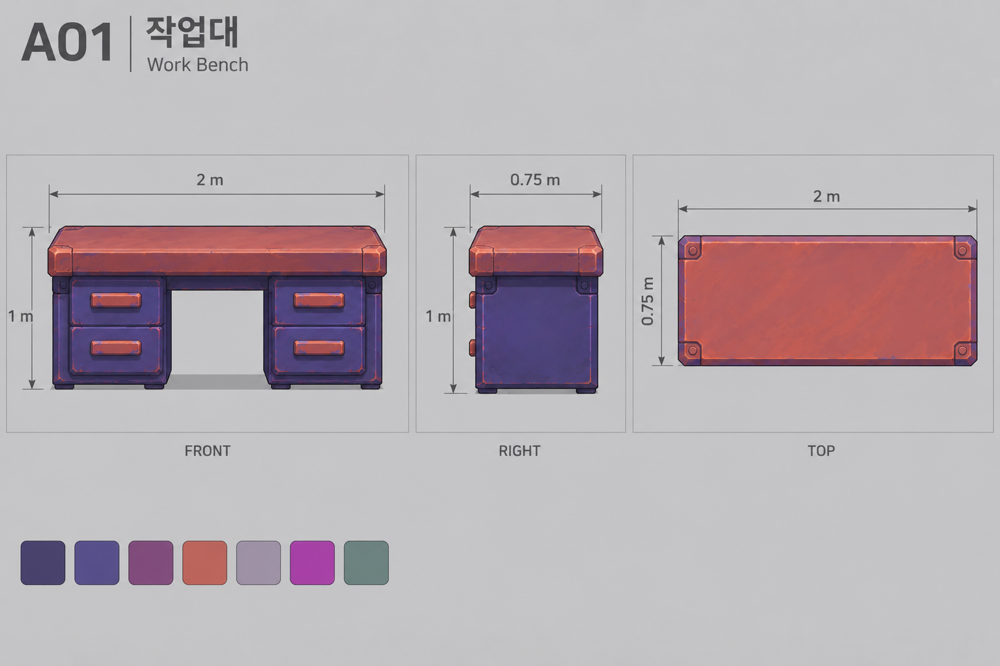
X 2 × Y 1 × Z 0.75 m / 피벗 prop
컬러 외관 가이드. 피벗/실측 규격은 DESIGN.txt 참조.
A02 · 수납장
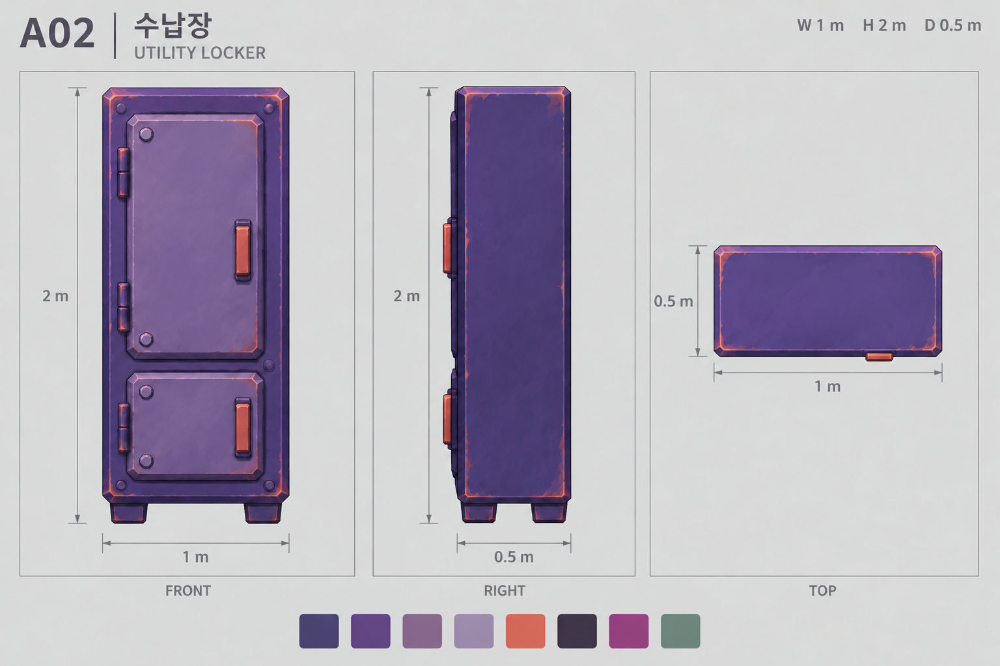
X 1 × Y 2 × Z 0.5 m / 피벗 prop
평면 손잡이를 정면과 같은 면으로 교정.
A03 · 전기함
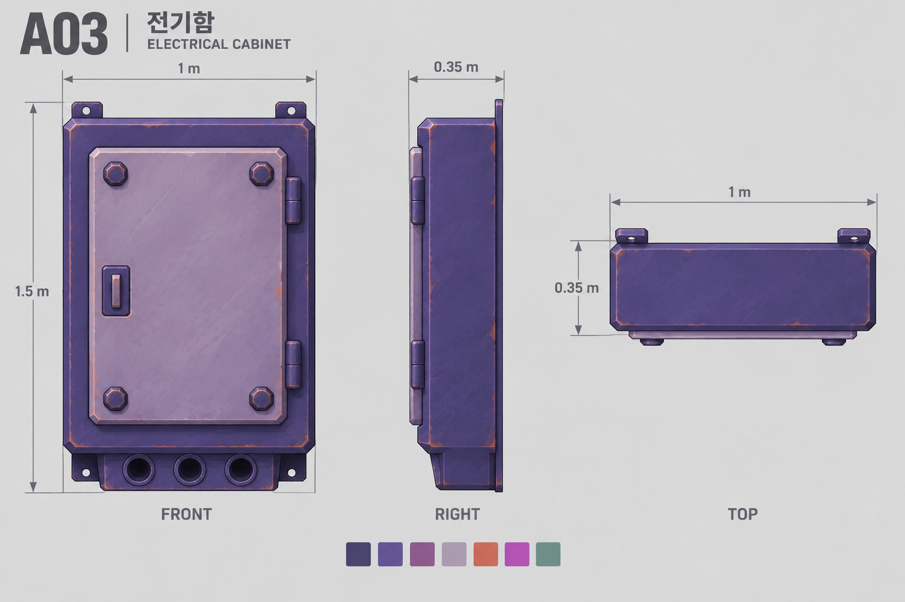
X 1 × Y 1.5 × Z 0.35 m / 피벗 mount
컬러 외관 가이드. 피벗/실측 규격은 DESIGN.txt 참조.
A04 · 공구 걸이판 세트
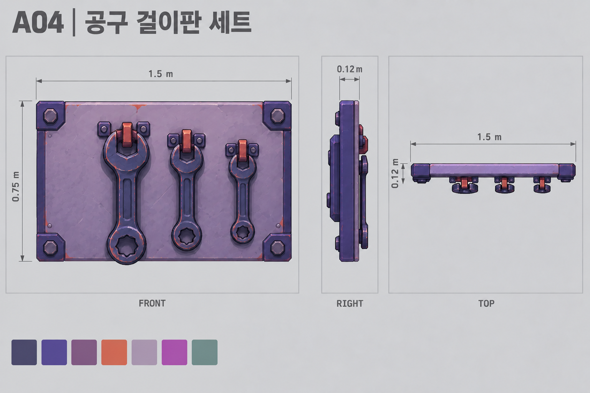
X 1.5 × Y 0.75 × Z 0.12 m / 피벗 mount
판/훅/공구3개 하위 메시. 별도 전기함 제거.
A05 · 공구 상자
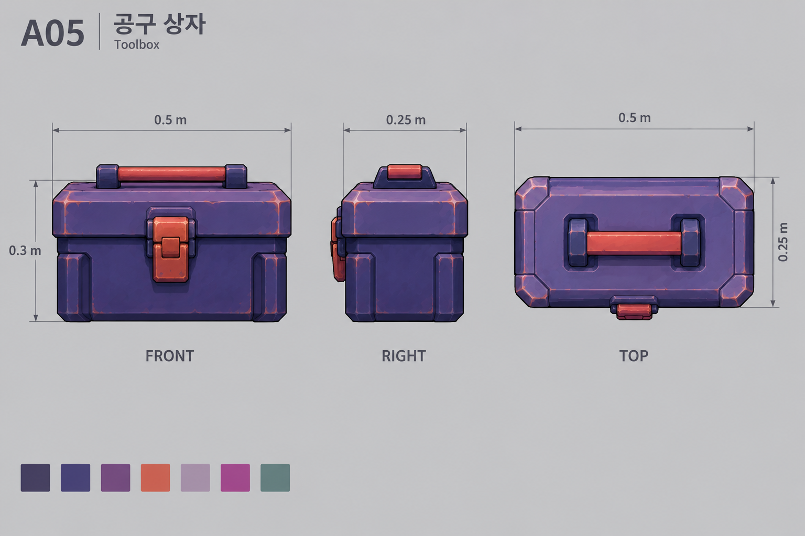
X 0.5 × Y 0.3 × Z 0.25 m / 피벗 prop
컬러 외관 가이드. 피벗/실측 규격은 DESIGN.txt 참조.
A06 · 소형 약품통
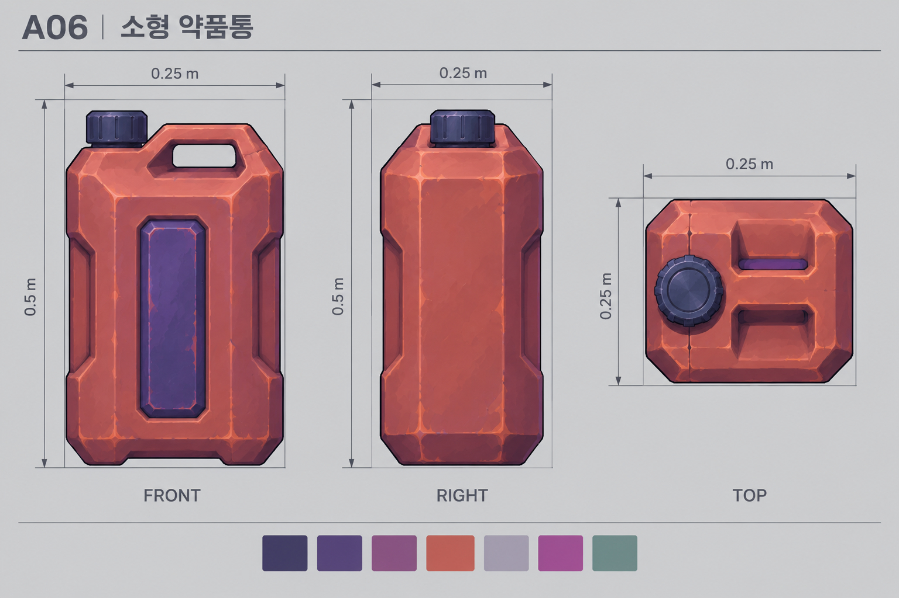
X 0.25 × Y 0.5 × Z 0.25 m / 피벗 prop
컬러 외관 가이드. 피벗/실측 규격은 DESIGN.txt 참조.
A07 · 빗자루
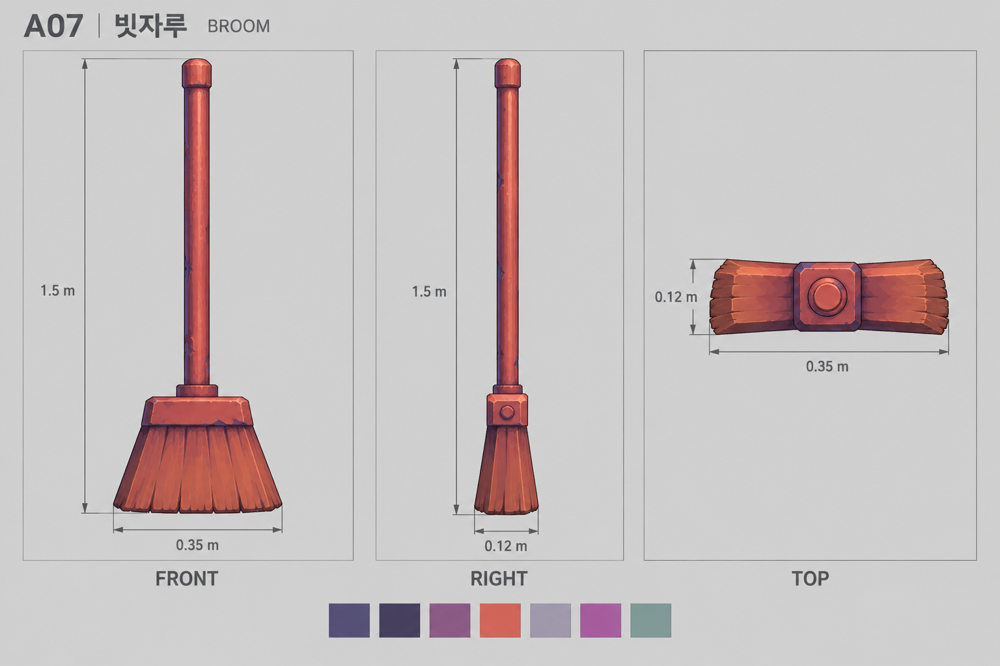
X 0.35 × Y 1.5 × Z 0.12 m / 피벗 prop
컬러 외관 가이드. 피벗/실측 규격은 DESIGN.txt 참조.
A08 · 머그컵
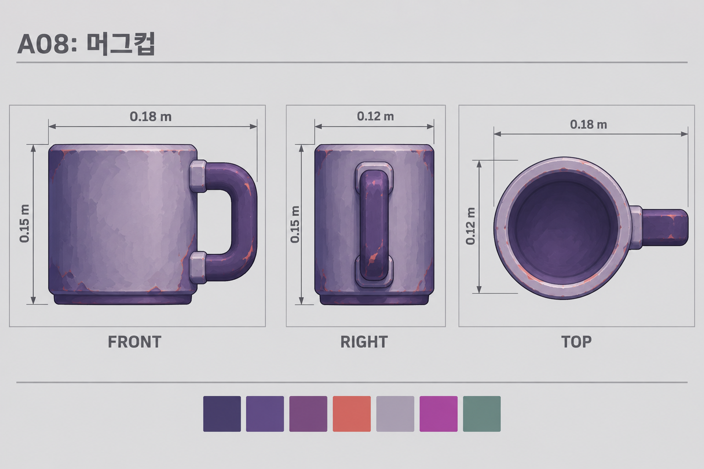
X 0.18 × Y 0.15 × Z 0.12 m / 피벗 prop
컬러 외관 가이드. 피벗/실측 규격은 DESIGN.txt 참조.
A09 · 작업대 천
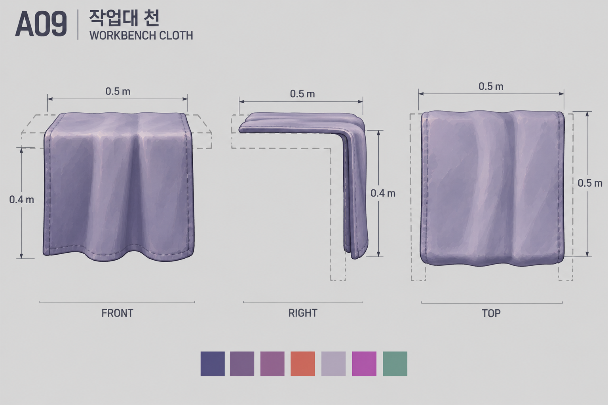
X 0.5 × Y 0.4 × Z 0.5 m / 피벗 prop
피벗 예외: 천이 접히는 선의 중앙.
A10 · 가로 튜브등
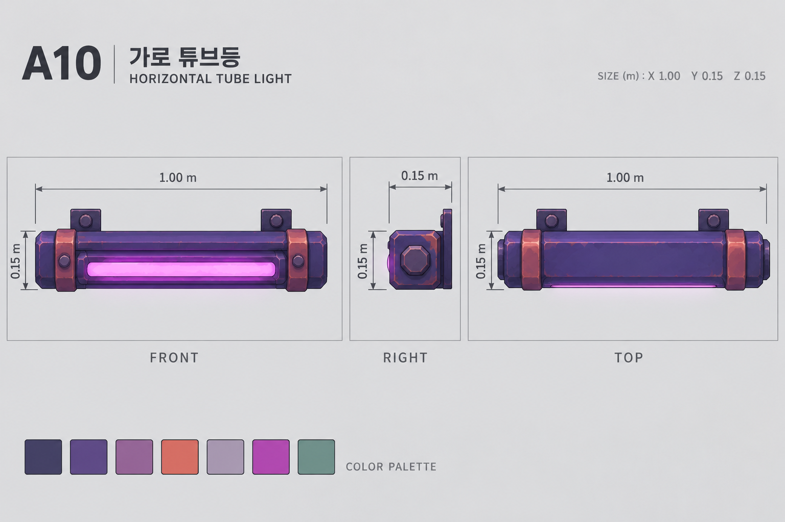
X 1 × Y 0.15 × Z 0.15 m / 피벗 mount
컬러 외관 가이드. 피벗/실측 규격은 DESIGN.txt 참조.
A11 · 세로 표시등
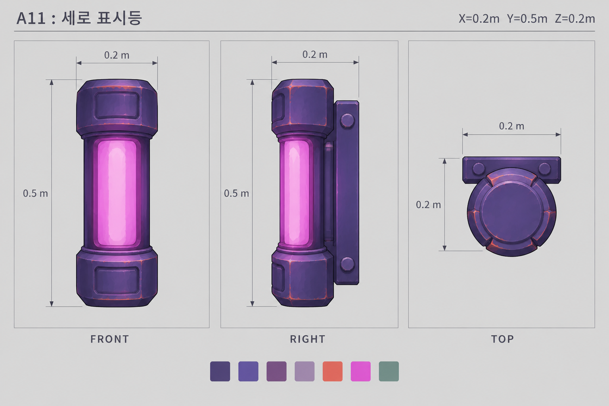
X 0.2 × Y 0.5 × Z 0.2 m / 피벗 mount
컬러 외관 가이드. 피벗/실측 규격은 DESIGN.txt 참조.
A12 · 케이블 도관
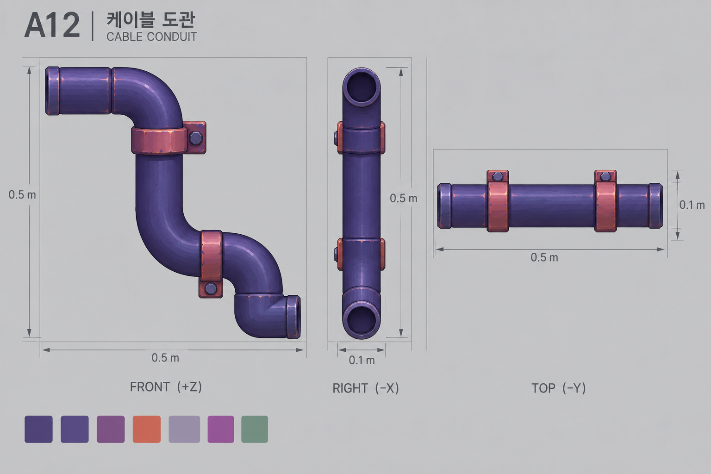
X 0.5 × Y 0.5 × Z 0.1 m / 피벗 mount
컬러 외관 가이드. 피벗/실측 규격은 DESIGN.txt 참조.
A13 · 걸이 호스
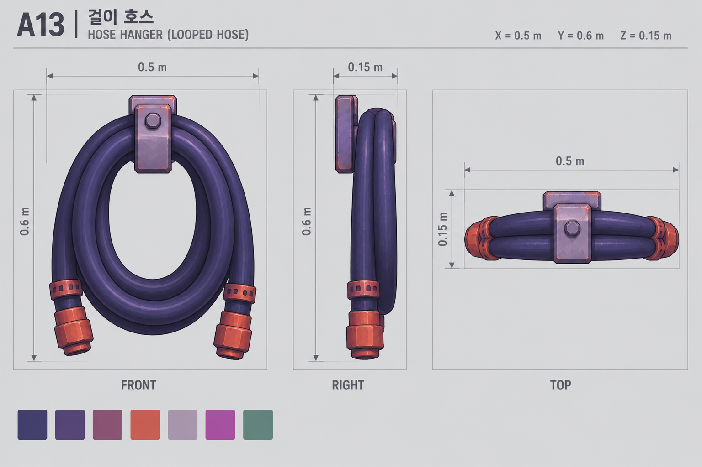
X 0.5 × Y 0.6 × Z 0.15 m / 피벗 mount
컬러 외관 가이드. 피벗/실측 규격은 DESIGN.txt 참조.